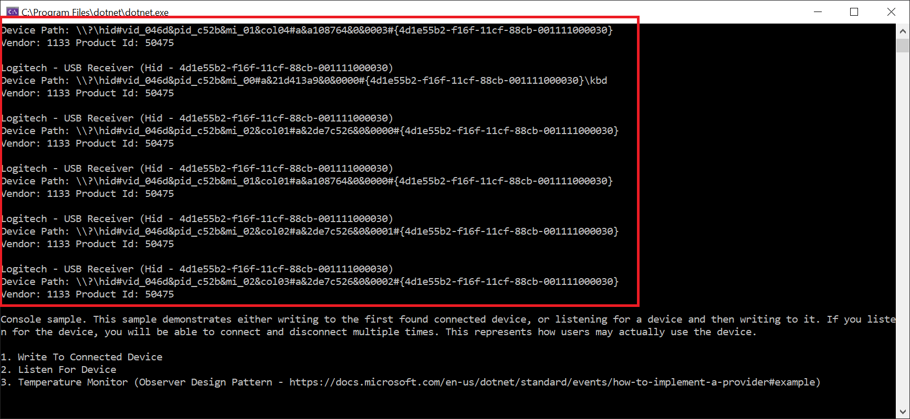

Getting Started
Run Windows Sample (Usb.Net.WindowsSample)
Run the Windows sample. You should see your device's path appear at the top of the console. If it does not, check the logs to find out why it didn't appear.

Modify a Sample
The easiest way to start is to clone this repo that uses Usb.Net or Hid.Net and modify the code to suit your needs. This repo contains a sample for Hid thermometer device and a Trezor Hardware wallet example. If you have trouble getting a sample to compile, please see Build Issues
Clean Project
If you want to start fresh, the easiest way would be to create a .NET Core project on Windows with Visual Studio and add the NuGet packages you require. Please see the NuGet page.
Please see
Device Listener or Enumerating Connected Devices
Writing To and Reading From a Device
For USB, please see USB-Initialization: Interfaces And Endpoints
Example Code:
This is UWP code. The only difference for Windows is that you would call WindowsHidDeviceFactory.Register().
private static async Task InitializeTrezor()
{
//Register the factory for creating Usb devices. This only needs to be done once.
UWPUsbDeviceFactory.Register();
//Register the factory for creating Usb devices. This only needs to be done once.
UWPHidDeviceFactory.Register();
//Define the types of devices to search for. This particular device can be connected to via USB, or Hid
var deviceDefinitions = new List<FilterDeviceDefinition>
{
new FilterDeviceDefinition{ DeviceType= DeviceType.Hid, VendorId= 0x534C, ProductId=0x0001, Label="Trezor One Firmware 1.6.x" },
new FilterDeviceDefinition{ DeviceType= DeviceType.Usb, VendorId= 0x1209, ProductId=0x53C1, Label="Trezor One Firmware 1.7.x" },
new FilterDeviceDefinition{ DeviceType= DeviceType.Usb, VendorId= 0x1209, ProductId=0x53C0, Label="Model T" }
};
//Get the first available device and connect to it
var devices = await DeviceManager.Current.GetDevicesAsync(deviceDefinitions);
var trezorDevice = devices.FirstOrDefault();
await trezorDevice.InitializeAsync();
//Create a buffer with 3 bytes (initialize)
var buffer = new byte[64];
buffer[0] = 0x3f;
buffer[1] = 0x23;
buffer[2] = 0x23;
//Write and read the data to the device
var readBuffer = await trezorDevice.WriteAndReadAsync(buffer);
}